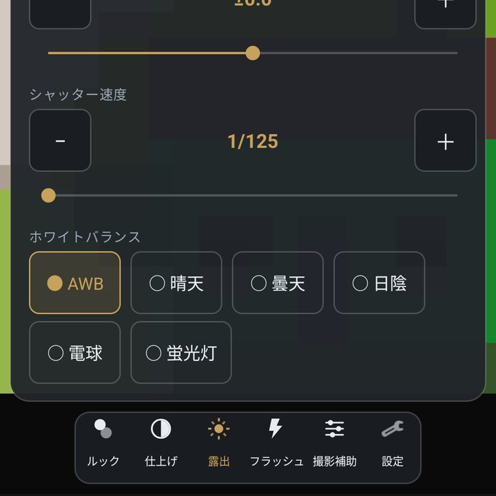
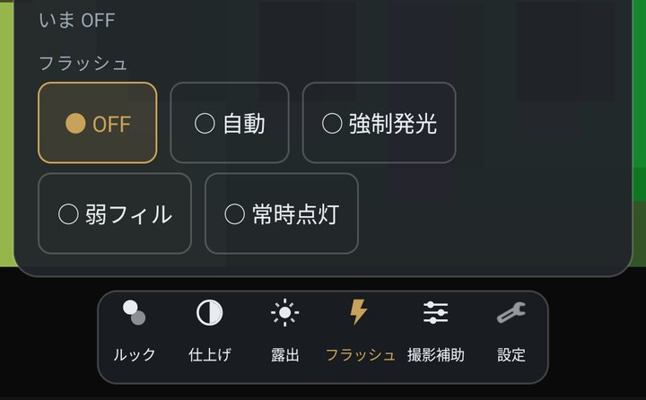
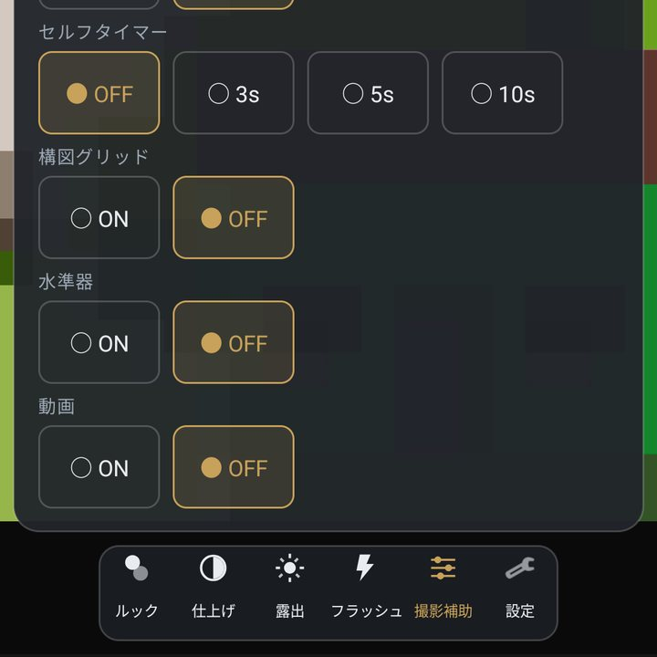

露出・フラッシュ・撮影補助

露出
- 露出モード
- A は端末におまかせ。P もおまかせですが、設定の「ISO上限」や「最低シャッター速度」が効きます。 S はシャッター速度を優先、M はシャッター速度と ISO を自分で決めます。 かんたん・標準の表示では A/P/S/M が画面に出ないので、設定 > 撮影 > 露出モード から変えてください。
- 露出補正
- −3.0〜+3.0 を 1/3 段ずつ。写真を明るくしたいときは +、暗くしたいときは −。M のときは出ません。
- シャッター速度 / ISO 感度
- シャッター速度は S と M、ISO は M のときだけ出ます。
- ホワイトバランス
- 自動 / 晴天 / 曇天 / 日陰 / 電球 / 蛍光灯。照明の色で写真が黄色や青に寄るときに合わせます。
フラッシュ

OFF / 自動 / 強制発光 / 弱フィル / 常時点灯。弱フィルは一瞬強く光らせるのではなく、 弱く点けたまま撮って、その場の雰囲気を残す使い方です。 端末や前面カメラによっては使えない方式があり、そのときは選べないか OFF に戻ります。 フラッシュを使っているあいだは、ナイトモードと HDR が止まります。
撮影補助

- 合成初期値 自動
- 同じ場面を4枚・8枚続けて撮り、位置を合わせて重ねます。重ねるほど暗いところのざらつきが減ります。 自動は暗いときだけ重ねます。×4 / ×8 は明るさに関係なく毎回重ねます。
- HDR初期値 OFF
- 明るさの違う3枚から、白飛びと黒つぶれを抑えた1枚を作ります。空と建物のように明暗差が大きい場面向けです。
- セルフタイマー
- OFF / 3秒 / 5秒 / 10秒。
- 構図グリッド・水準器
- 線と水平の目安を出します。グリッドの種類は 設定 > 表示 で選べます。
- 動画
- 写真と動画を切り替えます。
フォーカス（プロ表示のとき）
- ピント合わせ
- AF（自動）か MF（手動）。MF にすると「ピント距離」が出ます。
- ピーキング
- ピントが合っている輪郭に色を付けます。MF で合わせるときの目安です。
- 合焦しないとき
- 「待たずに撮る」か「合うまで待つ」。設定 > 撮影 の「AFが合わないときの撮影」と同じです。
- 撮影後にピントを戻すまで（秒）
- タップや長押しで決めたピントを、撮影後いつ外すか。0 は外しません。